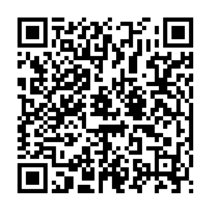

📷 Juega la misión en tu teléfonoUn robot es una máquina que PERCIBE su entorno con sensores, DECIDE qué hacer con su controlador (siguiendo un programa) y ACTÚA con motores, ruedas o brazos. Ese ciclo se repite una y otra vez: percibir → decidir → actuar.
✅ Y todo funciona gracias a la energía de su batería, como tu cuerpo con el alimento. 🔋
Cuando esquivas una pelota, tus ojos la ven (receptor), tu cerebro decide moverte y tus músculos te apartan (efector). El robot hace exactamente lo mismo con sus partes:
| Parte del robot | En tu cuerpo | ¿Qué hace? |
|---|---|---|
| 📡 Sensores | Ojos, oídos, piel | PERCIBEN: luz, sonido, distancia, tacto, temperatura |
| 🧠 Controlador | El cerebro | DECIDE según las instrucciones de su programa |
| 💪 Actuadores | Los músculos | ACTÚAN: motores, ruedas, brazos, luces, bocinas |
| 🔋 Energía | El alimento | Da fuerza a todas las partes (batería o electricidad) |
| Máquina | ¿Percibe? | ¿Decide? | ¿Actúa? | Veredicto |
|---|---|---|---|---|
| 🔨 Martillo | No | No | No (lo mueves tú) | Máquina simple |
| 🥤 Licuadora | No | No (la enciendes tú) | Sí | Electrodoméstico |
| 🤖 Aspiradora robot | Sí: obstáculos | Sí: elige su ruta | Sí: ruedas y cepillos | ¡ROBOT! |
| Tipo | ¿Cómo es? | Ejemplo |
|---|---|---|
| 🏭 Industrial | Brazo fijo en la fábrica | Brazo que cose y corta en la maquila |
| 🛞 Móvil | Se desplaza con ruedas | Aspiradora robot; carrito seguidor de línea |
| 🚁 Dron | Vuela con hélices | Dron que revisa los cultivos de café |
| 🦿 Humanoide | Con forma de persona | Robots que caminan y mueven los brazos |
| 🦾 Brazo robótico | De gran precisión | Cirugía asistida en los hospitales |
| ¿Dónde? | ¿Qué robot trabaja ahí? | ¿Qué hace? |
|---|---|---|
| 🏭 Maquila | Brazos robóticos | Cosen y cortan tela siguiendo su programa |
| ☕ Agro (café) | Drones | Revisan los cafetales desde el aire y detectan zonas enfermas |
| 🏥 Medicina | Robots de cirugía | Ayudan al médico con movimientos muy precisos |
| 🏠 Hogar | Aspiradora robot | Limpia sola: detecta obstáculos y decide su ruta |
| Columna A | Columna B |
|---|---|
| 1. ____ Robot | A. Robot volador que revisa cultivos desde el aire |
| 2. ____ Sensor | B. Motor, rueda o brazo que ejecuta la acción |
| 3. ____ Controlador | C. Batería o electricidad que hace funcionar al robot |
| 4. ____ Actuador | D. Actúa al encenderlo, pero no decide solo |
| 5. ____ Programa | E. Máquina que percibe, decide y actúa |
| 6. ____ Energía | F. Herramienta que no percibe ni decide (martillo) |
| 7. ____ Dron | G. Parte que capta luz, sonido, distancia o temperatura |
| 8. ____ Máquina simple | H. Lista de instrucciones exactas paso a paso |
| 9. ____ Electrodoméstico | I. Limpia sola: detecta obstáculos y elige su ruta |
| 10. ____ Aspiradora robot | J. El «cerebro» que decide según el programa |
| Actividad | Lugar | Valor | Nota obtenida | Observación |
|---|---|---|---|---|
| Copió los contenidos de este material en su cuaderno de Robótica. | Tarea en el hogar | 100 | ||
| Resolvió la sección «Ponte a Prueba» directamente en esta ficha. | Tarea en el aula, un día antes del examen | 100 | ||
| Dibujó el robot de su pueblo señalando sensores, controlador y actuadores, y jugó al «compañero robot». | Tarea en el hogar | 100 | ||
| Prueba impresa realizada en el aula. | Evaluación en el aula | 100 | ||
| Promedio nota final → | % | |||
Recuerde que ya aprendió a sacar el promedio: sume el total del valor obtenido y divídalo entre cuatro. El resultado será su nota final. Perderá puntos si no completa el trabajo, si su letra no es legible o si escribe con faltas de ortografía.
Esta hoja se imprime suelta: es solo para el docente o para la autoevaluación guiada.